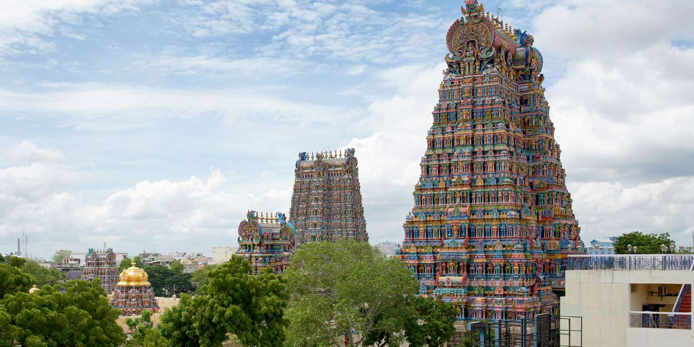

MEENAKSHI TEMPLE
Imagine approaching a temple complex where you are greeted by a soaring gateway more than fifteen stories tall, covered in 1500 brightly painted sculptures of divine and demonic figures. It’s overwhelming and disorienting, but it is just a taste of what awaits the pilgrim or sightseer at the Meenakshi Temple in the town of Madurai in southern India. With its numerous towers and its warren of associated sacred spaces, it embodies the active continuation of an ancient set of religious and artistic traditions in southern India. Today, approximately 20,000 people per day visit the Meenakshi Temple’s almost 700,000 square feet of space, including the two principal sanctuaries and dozens of shrines of varying sizes. Bordered by high walls and gateways, it is a bewildering collection of indoor and outdoor spaces: small, cramped shrines, vast halls, low and high ceilings, darkness, light. hustle and bustle, quiet spaces, and chaos. All told, it contains around 30,000 sculptures. Many sacred sites and structures in India have mythical origins, and the city of Madurai near the southern tip of the subcontinent in Tamil Nadu state is no exception. According to tradition, more than 3500 years ago the god Indra installed a small tower over a naturally formed stone lingam as a sign of devotion to Shiva, one of the primary deities in the vast Hindu pantheon. (Typically considered the god of destruction, Shiva’s characteristics also include creation and virility.) Other gods followed Indra’s lead and began to worship there. Soon a human devotee witnessed the miraculous scene of gods worshipping at the lingam and notified the local king, Kulashekhara Pandya, who built a temple at the site. The architecture of the temple represents the
